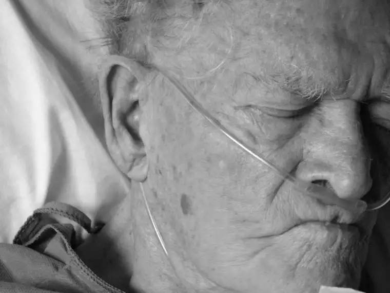

My mom isn’t prone to being easily rattled. So when she says something like, “Is there any chance you can get away for a visit?” I know it’s time to be attentive.
She said these words to me the other day, and by the next morning, plans were in order to make my way to the North Dakota city where she lives, and where she’s been visiting my father in a Catholic hospital for the past month-plus — since before Thanksgiving when he was hospitalized for pneumonia.
 |
| Morguefile.com |
{kind=link}
Since the ambulance trip to the hospital the day before Thanksgiving, dad has had more dips than peaks. The pneumonia is at bay, but his body took a whipping from it, as well as his psyche. He’s been diagnosed by his primary doctor as having early-stages Alzheimer’s — a word I’d always hoped I’d never say or write in connection to my family members. Isn’t it enough that he’s been suffering from diabetes all these years? How fair that both brain and body be attacked? I’ve since learned there might be a connection between the two. But that’s for another post.
What’s been on my mind now is the will to live and how strong it is. Many days of late, I have wondered if my father has begun to lose that will — the same will that keeps my 98-year-old grandmother hanging on, unbelievably in my mind (though I’m grateful she’s still with us). Some days, he’s refused to eat. And when my mom invited him to a meeting about his condition and future with hospital staff the other day, he didn’t care to be part of the discussion. That said a lot right there. He seems content to let others take control of his life. That’s not my dad.
I’d really begun to feel that the end was near, and I think my mom had thought that, too, but today, a positive came from mom. When she arrived for her daily visit at the transitional unit in the hospital, a nurse had reported an “awesome day” and he was just finishing part of his lunch — real food, not the powdered drink he’d been consuming. He’d also eaten a good breakfast and taken all his pills without complaint. And — this is the clincher — he’d asked for something to read. This is the first time since his long hospital stay that he’s had any interest in reading. Big, big deal.
And so there’s hope again, and a growing wonderment within me about this will-to-live thing. As I’ve watched those near death spring back to life when, seemingly, the quality of life isn’t as superior as one would imagine it should be for one to desire it that much, I can’t help but stand in awe at how valiantly we cling to life…from cradle to grave, it seems.
{kind=link}
Which begs the question: why? What is it that propels us in THIS direction? I realize, yes, that there is the other extreme — the young teen that gives up and chooses the opposite route. That, in light of what I’m talking about here, is just as perplexing. Because, based on my Grandma Betty’s life, even when the only thing to look forward to is a monthly outing to the doctor and maybe to lunch if you’re lucky, there is an absolutely over-the-top amazing will within most of us to live, to breathe, to see what’s next, even when the next thing is not taking a trip to the Bahamas or meeting the President of the United States.
Why? I don’t have an answer. I’m just exploring today, because I’m compelled to do so. What is it about this life that is worth clinging to?
The atheists I’ve talked to have challenged me in this. If we Christians are really, truly excited about the next world, if we view that to be our true home, then why the insistence on living in this world?
What is it? What do you think? I’ve come looking for answers and hope you’ll oblige me. I’m sure there are a million different answers for this question, but I want to know. What is it about life that makes it so worth living that my father would suddenly want to read the paper after not caring to look at another written word for a month straight?
I think I have part of the answer, but I’m looking forward to what you might add. And if I could ask for a few prayers for my parents besides, it would be worth this post to me in gold.
{kind=link}